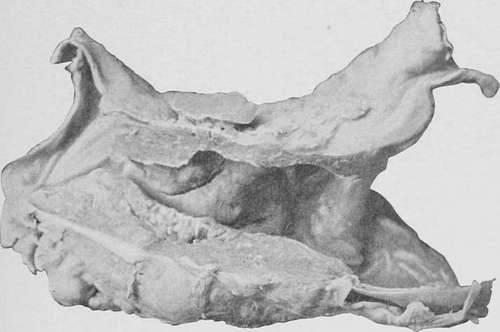
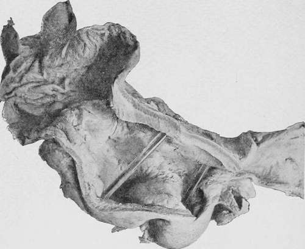
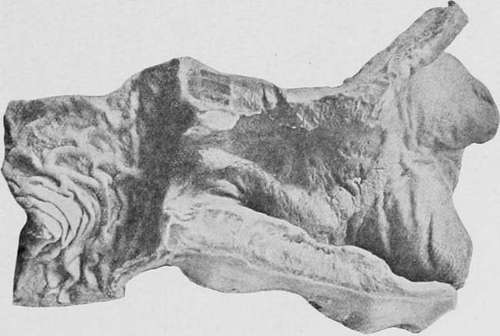
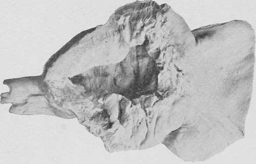
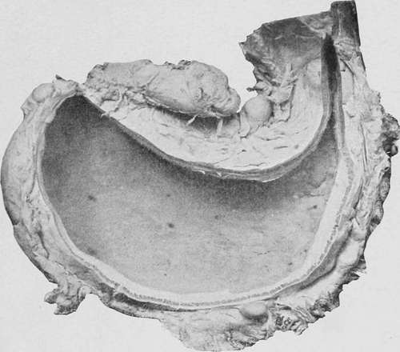
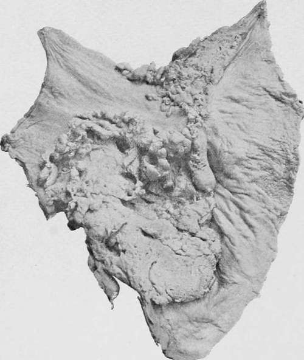

Scirrhus (Hard Spheroidal-Celled Carcinoma)
Description
This section is from the book "Cancer And Other Tumours Of The Stomach", by Samuel Fenwick. Also available from Amazon: Cancer and other tumours of the stomach.
Scirrhus (Hard Spheroidal-Celled Carcinoma)
This variety is chiefly met with in the pyloric region of the stomach and is characterised by its firm structure and its tendency to contraction.
(a) It usually commences immediately inside the orifice, which it often encircles, and thence spreads into the contiguous gastric tissues. The pylorus is thus converted into a rounded or oval mass, the surface of which is smooth or slightly lobulated. When laid open the diseased portion of the viscus presents a conical or funnel shape, while the opening into the duodenum is converted into a long, narrow, and often tortuous channel, v/hich may only admit the passage of a probe.
Fig. 1.-Scirrhous carcinoma of the pylorus causing stenosis. (London Hospital Museum.).
The disease is usually limited to the stomach, and seldom invades the first part of the duodenum; but in the opposite direction it shades off gradually in the gastric wall, and is often prolonged, in the form of bands or rows of small nodules, for some distance along one or both curvatures. Examination of the surface of the section shows that the various coats, though firmly welded together, can still be distinguished from one another. From one-half to two-thirds of the mass consists of submucous tissue which exhibits a smooth white glistening structure, slightly concave at its centre owing to contraction of its fibrous elements, and so hard as to creak under the knife. The contractile tissue of the muscular coat is much hypertrophied, and appears as a brownish red or pale pink semitranslucent material, enclosed in small polygonal meshes of a pearly white colour. The walls of these meshes are thickest where they run perpendicularly to the plane of the mucous membrane, and at first correspond to the lines of connective tissue which normally intersect the muscular coat; but as the disease progresses the infiltration becomes more diffuse and the reticulation more complex. The subserous tissue is thickened and opaque, and the peritoneum itself is usually covered with organised lymph, in which small nodules of new growth may sometimes be detected. The mucous membrane is either congested in patches, or exhibits a uniform dead-white colour, while its surface may be slightly uneven as a result of chronic inflammation, or be covered with small nodules of new growth. In a large proportion of the cases some degree of ulceration is present, the ulcers being small and superficial in character, with ill-defined sloping edges and bases which are smooth, irregular, papillomatous, or ragged.
Fig. 2.-Scirrhous infiltration of the cardiac and central portions of the stomach, leaving the pyloric end unaffected. (London Hospital Museum.).
(b) Occasionally scirrhous carcinoma is strictly limited to the pylorus, where it forms a tumour that may attain the size of a Tangerine orange. The line of demarcation between the healthy and diseased tissues is fairly defined, and with the exception of a slight extension along one or both curvatures the walls of the viscus around the tumour are practically free from infiltration. The greater part of the mass is composed of dense white fibrous tissue, streaked or flaked with yellow; but not infrequently it contains one or two small cysts filled with a grumous fluid, or presents signs of colloid degeneration. As a rule the pyloric orifice is greatly contracted and is converted into a narrow tortuous channel; but when ulceration has taken place the interior of the tumour may present a large sloughing cavity, which communicates freely with both the stomach and the duodenum.
(c) In a third variety the disease takes the form of a localised induration of the gastric wall close to the pylorus. The edges of the growth are slightly elevated above the surrounding mucous membrane, while its centre is somewhat depressed. The surface is usually smooth and covered with a brownish mucoid secretion ; but occasionally it has a furrowed or terraced appearance, as though its substance had constantly scaled off. The peritoneal aspect is thickened and often adherent to the liver or pancreas, and on section the whole growth seems to consist entirely of fibrous tissue, which yields a little white juice when scraped. Owing to its proximity to the pylorus, it not infrequently displaces and contracts the orifice, and thus occasions considerable dilatation of the stomach. It will be observed that in its general characters this form of cancer closely resembles the scar of a simple chronic ulcer ; and there can be little doubt, as Dittrich originally suggested, that in the absence of secondary deposits in the liver the malignant nature of the disease is very apt to be overlooked.
Fig. 3.-Scirrhous carcinoma of the pylorus with ulceration. (Museum of the Royal College of Surgeons.).
(d) Scirrhus may invade the whole of the stomach and convert it into a small thick-walled sac, which has been likened to a leather bottle. In a characteristic case the organ is found after death to be retracted beneath the left lobe of the liver, while the space it usually occupies is filled by the transverse colon. When isolated it appears like a piece of thick indiarubber tubing from four to six inches in length, and with a diameter often less than that of the small intestine. The lower end of the oesophagus may be slightly dilated, and the finger can easily be passed through the cardiac orifice. The pylorus, on the other hand, may be so contracted as barely to admit the tip of the little finger. When the viscus is laid open, its walls are found to be greatly thickened, tough and incollapsible, especially in the pyloric and central portions, the induration, which chiefly affects the submucous and muscular coats, gradually diminishing towards the fundus. Its cavity is represented by a small hollow at either end of the tubular mass, which communicate by a narrow channel, the cubic capacity of the whole varying from half an ounce to three fluid ounces. The inner surface is sometimes quite smooth, and covered with a layer of tenacious mucus ; but as a rule one or more small superficial ulcers may be observed about the centre of the organ, while in rare instances the whole of the mucous membrane is extensively ulcerated. The peritoneal investment is much thickened, and there are usually numerous firm adhesions between the diseased organ and the liver, diaphragm, and colon. Occasionally signs of recent peritonitis are present in the upper segment of the abdomen. In rare instances diffuse scirrhus of the stomach is associated, either with stenosis of the cardiac orifice from implication of the lower end of the oesophagus, or with an annular growth at the centre of the organ, which divides it into two small thick-walled pouches, each about the size of a walnut.
Fig. 4.-Scirrhous carcinoma forming a localised tumour at the pylorus. Natural size. (London Hospital Museum.).
Fig. 5.-A stomach viewed from behind, showing diffuse infiltration by scirrhous carcinoma, with enlarged glands along the curvatures. (Museum of the Royal College of Surgeons.).
Fig. 6.- Cauliflower mass of spheroidal-celled carcinoma situated near the pylorus and extending along the lesser curvature. (London Hospital Museum.).
Continue to: